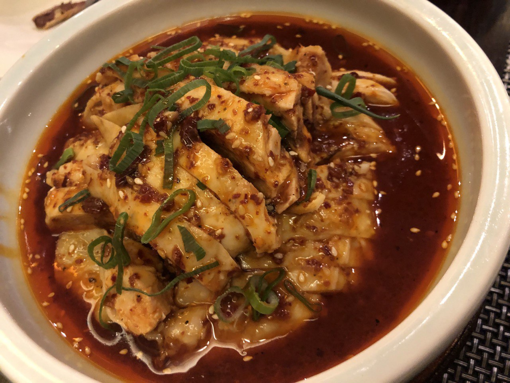
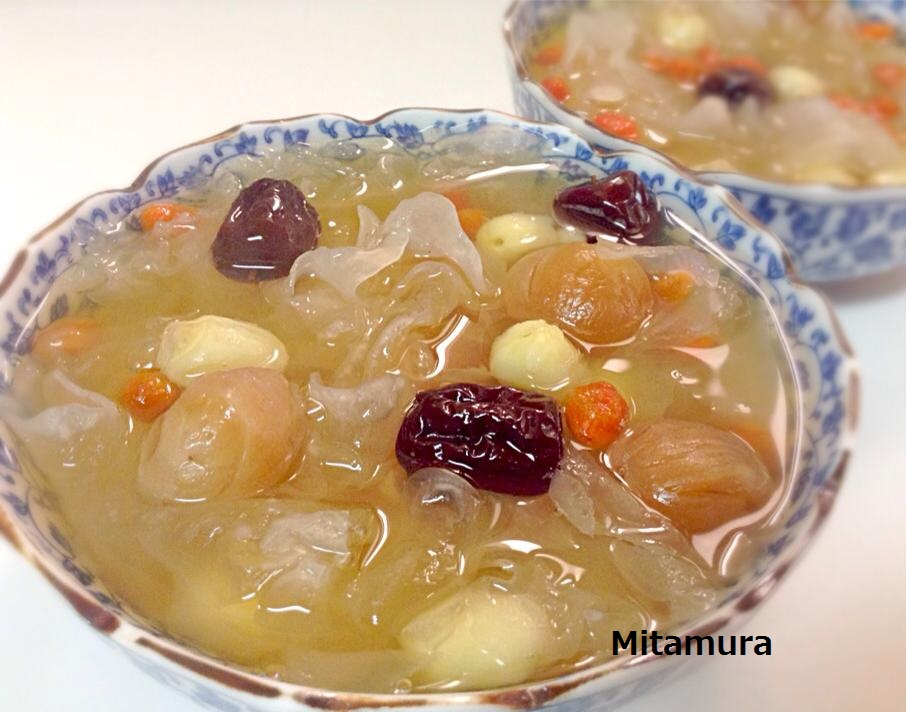

天府川菜的世界
川菜作为中国四大菜系之一，素有“一菜一格，百菜百味”的盛誉。四川盆地特有的湿热气候孕育出了以“麻辣”（辣椒的香辣与花椒的麻爽）见长的风味体系，深受国内外食客的热爱。

代表性经典美食
将鲜虾、牛肉与多种时令蔬菜配以秘制辛香料和花椒大火干炒而成的无汤锅品。鲜辣浓烈、镬气十足，食材精华相互交融，让人食欲大开。

以醇厚牛油、大量干辣椒与特级红花椒精心炒制底料，红亮浓郁。席间涮烫毛肚、鲜鹅肠与嫩牛肉，驱湿暖胃，热闹非凡。

选用鲜嫩白条鸡，煮熟后以木棒捶松肉质手撕成条，浇上以熟芝麻酱、特制红油辣椒与花椒油调和的怪味红油汁。香辣回甜、麻香浓郁。

以大米磨浆凝固而成的传统消暑甜点。质地如果冻般爽滑滑嫩，浇入浓郁的红糖糖浆，入口冰凉清甜，是麻辣大餐后的绝妙解辣圣品。

将雪白银耳与冰糖、枸杞慢火熬炖数小时而成的温润甜羹。汤汁浓稠胶滑，清润爽喉，兼具美容养颜与滋阴润燥的功效。

川菜的风味体系与“六大辣味”
川菜不仅擅长用辣，更讲究香料与火候的绝妙搭配，形成了著名的六大辛香层次：
- 麻辣：花椒与干辣椒并重，麻烈与炽热完美交织。
- 香辣：以热油激发干椒与香辛料的浓郁焦香，香气逼人。
- 糊辣：将干辣椒在热油中煸炒至微糊变暗，产生独特的坚果糊香辣味（如宫保鸡丁）。
- 糟辣：以米酒糟或发酵酸辣椒烹调，辣中带有醇厚发酵酸香。
- 酸辣：四川保宁醋与红油辣椒的天然融合，酸爽开胃、生津解腻。
- 鲜辣：采用新鲜二荆条或小米辣生炒，脆爽清爽、辣意直接。
四川料理的历史渊源
1. 巴蜀起源与三国宫廷（古代～唐代）
早在先秦春秋战国时期的“巴国”与“蜀国”，四川便因土壤肥沃、水利兴修而被称为“天府之国”，诞生了早期的花椒、生姜与食盐复合调味。三国时期蜀汉宫廷确立了讲究刀工与火候的雏形，唐代川菜更是诗仙李白、诗圣杜甫笔下常客。
2. 辣椒传入与麻辣定型（17世纪明末清初）
大航海时代美洲原产的辣椒传入中国，并于清初迅速在湿热多雾的四川盆地扎根。原产四川本土的野生花椒与外来辣椒发生美妙碰撞，由此诞生了独步天下的“麻辣”味型。
3. 盆地气候与调味智慧（近现代）
由于四川地处崇山峻岭环抱的盆地，冬阴冷湿润，夏闷热潮湿。食辣发汗、调理脾胃成为人们长期生存的智慧，最终完善了涵盖酸、甜、麻、辣、咸、苦、鲜的宏大风味宇宙。
日本四川料理的本土化
自20世纪中叶陈建民先生在东京创办四川饭店以来，为契合日本人的口味，减少了油分与花椒辣度，增加了番茄酱与甜面酱的运用，从而演化出了日本独有的日式麻婆豆腐与干烧虾仁。